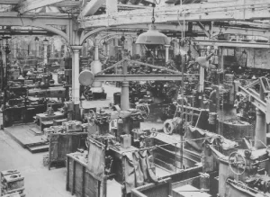
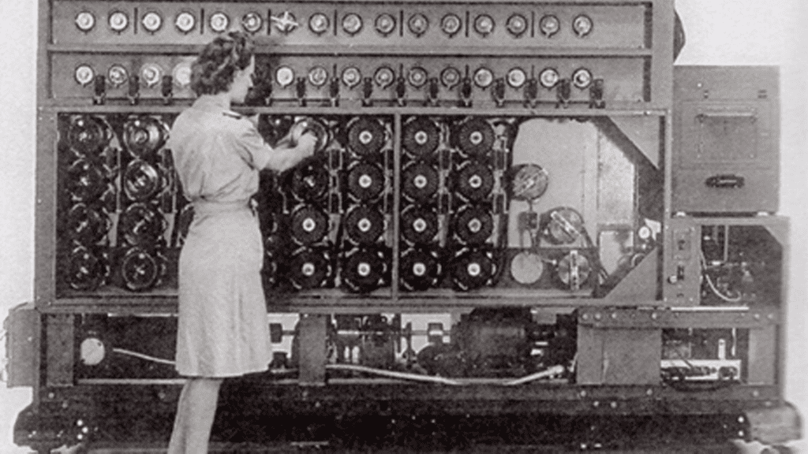

Revolusi Industri 1.0 merupakan sebuah revolusi di bidang industri yang pertama kali terjadi tepatnya pada abad ke-18 pada periode tahun 1750 hingga tahun 1850. Revolusi ini ditandai dengan adanya penemuan mesin uap yang digunakan dalam proses produksi sebuah barang.
Revolusi Industri
Revolusi Industri 2.0
[https://images.app.goo.gl/uTN9NZdgXsvZpueA6]
Kemunculan revolusi industri 2.0 terjadi di awal abad ke-20 yang dikenal dengan revolusi teknologi. Revolusi industri yang terjadi ini ditandai dengan adanya penemuan tenaga listrik yang membuat mesin uap yang tadinya sering digunakan dalam proses produksi semakin lama digantikan dengan adanya tenaga listrik tersebut.
Revolusi Industri 3.0
[https://images.app.goo.gl/ZDM5e29PfZSr884QA]
Kemunculan revolusi industri 3.0 yang terjadi pada akhir abad ke-20 ditandai dengan adanya teknologi digital serta internet. Berdasarkan sosiolog Inggris yaitu David Harvey yang mengemukakan cara pandangnya mengenai revolusi industri yang terjadi di masa ini sebagai sebuah proses pemampatan ruang dan waktu yang semakin terkompresi.
Revolusi Industri 4.0
[https://images.app.goo.gl/NaxBoWYYB6xJmbDRA]
Revolusi industri 4.0 yang terjadi pada awal abad ke-21 merupakan sebuah revolusi di mana manusia telah menemukan pola baru dengan adanya kemajuan teknologi yang terjadi begitu cepat sehingga mengancam berbagai perusahaan yang lebih konvensional.